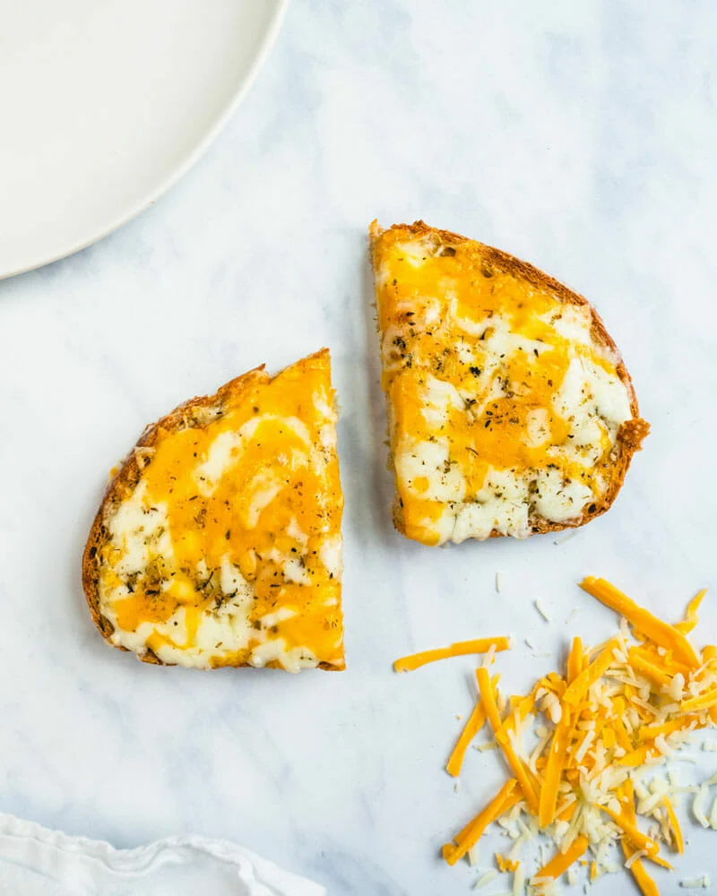

Cheese on Toast

Description
Hangry and need food now? Try cheese toast! It’s simple but…man! You won’t believe the flavor in this recipe. A few simple ingredients make for over-the-top flavor. This fast and easy recipe works as a snack, with tomato soup for lunch, or with
a green salad as a throw-together dinner. Did you grow up with cheese toast? Sources tell us it’s a UK and Australian thing…but we’ve love to know your experience with it. Here’s how to make the best version of cheese toast you’ll have!
Ingredients
- 1 large sliced bread
- 1/2 tablespoon mayonnaise
- 1/2 teaspoon Dijon mustard
- 1 pinch kosher salt
- 1/3 cup shredded cheese (we used a mix of mozzarella, sharp cheddar and Parmesan)
- 1 pinch dried oregano
Steps
- Preheat a broiler. Place the bread on a baking sheet and broil it 1 to 2 minutes per side, until lightly toasted
- Spread teh bread with a thin coating of mayonnaise, then Dijon mustard. Top with 1 pinch salt. Add the shredded cheese and sprinkle with oregano
- Place the toast bake on the baking sheet. Broil again for about 1 to 2 minutes unti the cheese is melted. Enjoy!